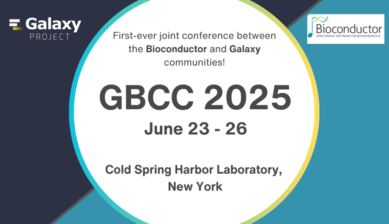

We’re excited to announce the first-ever Galaxy and Bioconductor Community Conference (GBCC 2025), scheduled from June 23-26, 2025, at Cold Spring Harbor Laboratory in New York. This event will bring together the Galaxy and Bioconductor communities in a joint effort to advance bioinformatics and data science tools across diverse platforms.
Why GBCC 2025?
The fields of genomics and bioinformatics are evolving rapidly, generating vast amounts of data that require increasingly sophisticated analysis methods. A key challenge is integrating diverse tools and platforms in a way that is both user-friendly and conducive to collaboration. GBCC 2025 is set to address this by combining the strengths of Galaxy’s user-friendly web-based platform with Bioconductor’s comprehensive suite of R-based tools for genomic and data science. This conference aims to showcase the integration of Galaxy and Bioconductor tools and also to develop reproducible workflows, promote community-driven tool development, and enhance training and educational opportunities across both communities. Attendees can look forward to discussions on enhancing interoperability, improving workflows, expanding training and educational resources, enriching documentation, and accelerating discoveries in biology and health.
What to Expect
GBCC 2025 will feature a range of activities designed to support collaboration and community engagement:
Keynotes featuring cutting edge science: The conference will feature keynotes, panel and lightning sessions from leaders in Bioconductor and Galaxy, providing attendees with insights into the latest advancements in statistical methods for genomic data analysis and scientific research.
Hands-on Tutorials and Workshops: Participants can attend sessions that demonstrate the integration of Bioconductor tools within the Galaxy platform. These interactive workshops and tutorials will provide hands-on experience, making data analysis workflows more accessible and efficient for researchers.
Networking and Community Building: The conference provides opportunities to connect with peers through poster sessions, networking events, and collaborative activities. GBCC 2025 will serve as a springboard for long-term collaborations between the Galaxy and Bioconductor communities, opening new avenues for joint projects and shared resources.
Focus on Diversity and Inclusion: We are committed to ensuring that GBCC 2025 reflects the diversity of the broader scientific community. Scholarships, support for underrepresented groups, and resources for attendees with childcare and other responsibilities will be available, creating an inclusive environment where all voices are valued.
Why Attend?
By participating in GBCC 2025, you’ll be at the forefront of efforts to develop accessible tools that accelerate research discoveries in bioinformatics and genomic data science. Whether you’re a researcher, educator, or data scientist, this conference offers a unique opportunity to connect with a global community, learn from leading experts, and collaborate on projects that drive advancements in the field. GBCC 2025 will provide a platform to discuss reproducibility and open science, exploring ways to make tools and methods more accessible and transparent for the community.
Join Us in Shaping the Future
GBCC 2025 is currently planned as a one-time event that, offering a unique opportunity to explore future collaborations between the Galaxy and Bioconductor communities. The insights and connections made at GBCC 2025 could have a lasting impact on the broader scientific community, setting new standards for collaborative research in bioinformatics.
Logo Design Contest
To celebrate this collaboration, we are launching a logo design contest for GBCC 2025! The winning design will become the official conference logo, featured on all conference materials, including stickers and t-shirts. More details on how to participate will be shared soon.
Join the Conversation
Follow and use the hashtag #GBCC2025 on social media to stay updated on all the latest news, discussions, and announcements related to the Galaxy and Bioconductor Community Conference. To receive alerts, follow us on social media:
- LinkedIn (Bioconductor, Galaxy)
- Mastodon (Bioconductor, Galaxy)
- BlueSky (Galaxy)
Sponsorship Opportunities
If you are interested in sponsoring this unique collaborative event, email Jenn Vessio (jvessio1 [at] jhu.edu) and Maria Doyle (maria.doyle [at] ul.ie).
Stay Tuned
Registration details and further information will be announced in the coming months. Mark your calendars for June 23-26, 2025, and we look forward to seeing you at Cold Spring Harbor Laboratory!
© 2024 Bioconductor. Content is published under Creative Commons CC-BY-4.0 License for the text and BSD 3-Clause License for any code. | R-Bloggers